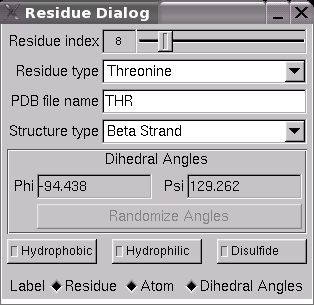

Dialog Window Reference
The Residue Dialog
The Residue Dialog, see Figure 1,
displays information about the currently selected amino acid residue,
and allows changing some residue parameters.
|
|
(a) 
|
(b) 
|
|
|
(c)
|
(d) 
|
|
(e)
|
|
|
|
Figure 1: The Residue Dialog. (a) No residue is
selected. (b) Some residue inside either an alpha-helix or a
beta-strand is selected. (c) Some residue inside a coil
region is selected. (d) Labels are enabled
for the selected residue. (e) Residue colorings are enabled.
|
- Residue index slider
-
This slider shows the index of the currently selected residue (or -1
if no residue is selected), and can be used to select a residue by
dragging the slider with the mouse. Residue index is actually a
misnomer, since the displayed number is not the residue's index in
the residue chain, but the identification number that would be
written out in a PDB file. Since residue numbers in PDB files are
usually sequential and zero- or one-based, this is not too much of a
distinction.
-
Residue type
-
This (unselectable) drop box displays the type of the currently
selected residue, or "Unknown" if the residue is not one
of the standard amino acids.
-
PDB file name
-
This text field shows the three-letter abbreviation that would be
written to a PDB file to identify the current residue's type.
-
Structure type
-
This drop box shows the secondary structure type (alpha-helix,
beta-strand, coil region) currently associated with the selected
residue. Structure types can be assigned individually to each
residue by selecting the desired type from the drop box. Reassigning
a residue's type will implicitly change the current protein's
secondary structure chain, and will select the new secondary
structure containing the selected residue as the current residue.
Changing a residue's structure type will not automatically
set the residue's dihedral angles to the standard values for the new
residue type. This can be achieved by selecting the "Reset to
Standard" button in the Structure Dialog.
-
Dihedral Angles
-
These two text fields show the current dihedral angle values for the
selected residue in degrees.
-
Randomize Angles
-
If the currently selected residue's structure type is coil region,
this button will set the selected residue's dihedral angles to
random values, uniformly distributed over the half-open interval [0,
2*pi).
-
Residue Label Toggle
-
The residue name, chain or model id, and
residue id of the selected residue can be displayed or hidden on the
screen.
-
Atom Label Toggle
-
All the name of atoms in the selected residue
can be displayed or hidden on the screen.
-
Dihedral Angles Label Toggle
-
The current dihedral angle values for the
selected residue in degrees can be displayed or hidden on the
screen.
-
Residue Color Button
-
Three types of residue color ( hydrophobic,
hydrophilic and disulfide) can be assigned to the current protein's
residues based on the residue type. The default color for
hydrophobic type is white. The default color for hydrophilic type is
blue. The default color for disulfide type is yellow. All three
types of residue color can be changed to different colors by editing
the ProteinRenderer section in ProteinShop.cfg file.
-
The Structure Dialog
The Structure Dialog, see Figure 2,
displays information about the currently selected secondary
structure, and allows changing the global shape of the selected
beta-strand and resetting all dihedral angles inside the selected
structure to their standard values.
|
|
(a) 
|
(b)
|
|
|
(c)
|
|
|
|
Figure 2: The Structure Dialog. (a) No secondary
structure is selected. (b) Either an alpha-helix or a coil
region is selected. (c) A beta-strand is selected.
|
- Structure index
-
This slider shows the index of the currently selected secondary
structure (or -1 if no structure is selected), and can be used to
select a secondary structure by dragging the slider with the mouse.
-
Structure type
-
This (unselectable) drop box displays the selected structure's type
(alpha-helix, beta-strand, coil region).
-
Residue Index Range
-
These two text fields show the residue indices of the first and last
residue contained in the selected secondary structure. The residue
indices displayed here are the same ones as displayed by the
"Residue index" slider in the Residue Dialog.
-
Beta Strand Shape Adjustment
-
If the selected structure is a beta-strand, these four rollers can
be used to globally modify the selected beta-strand's shape. The
four rollers correspond to the four basis vectors of the 2D shape
parameter space. Counting residues inside a beta-strand beginning
with zero, residue dihedral angles phi and psi are affected as
follows:
-
B-strand curl
-
Dragging this roller to the right decreases phi and
increases psi for even-numbered residues and increases phi
and decreases psi for odd-numbered residues.
-
B-strand twist
-
Dragging this roller to the right increases both phi and psi
for even- and odd-numbered residues.
-
B-strand pleat
-
Dragging this roller to the right decreases phi and
increases psi for even- and odd-numbered residues.
-
B-strand braid
-
Dragging this roller to the right increases both phi and psi
for even-numbered residues and decreases both phi and psi for
odd-numbered residues.
-
Flatten B-strand
-
If the selected structure is a beta-strand, this button will set its
dihedral angles to values such that all its hydrogen bond sites are
coplanar. Aligning two flattened beta-strands allows forming
arbitrary numbers of hydrogen bonds between them.
-
Reset to Standard
-
This button will reset the dihedral angles of all residues inside
the selected structure to the standard values for the selected
structure's type. Reassigning a residue's structure type using the
Residue Dialog will not automatically set that residue's dihedral
angles to the new standard values; this can be done on a
per-structure basis with this button.
The Drawing Toggles Dialog
The Drawing Toggles Dialog, see
Figure 3, is used to select rendering modes as desribed in
Rendering Features. The dialog
shows the global rendering mode settings, and per-structure settings
for the currently selected secondary structure.
|
|
(a) 
|
(b) 
|
|
|
|
|
Figure 3: The Drawing Toggles Dialog. (a) No
secondary structure is selected. (b) Some secondary structure
is selected.
|
- Global Parameters
-
The toggle buttons in this group are used to toggle global rendering
mode settings.
-
Structure Parameters
-
The toggle buttons in this group are used to toggle rendering mode
settings for the currently selected secondary structure.
The Protein
Selection Dialog
The
Protein Selection Dialog, see Figure 4, is used to make
selection and comparison between different proteins.
|
|
(a)
|
(b)
|
|
|
|
|
Figure 4: The Protein Selection Dialog. (a) One
protein is selected. (b) Two proteins are selected and the
Align button is enabled.
|
- Protein
-
All loaded protein names are displayed. The
current (selected) protein name is highlighted.
-
Remove Button
-
The selected protein will be removed.
-
Center View Button
-
The selected protein will be moved to center
of screen.
-
Align Button
-
Two proteins can be aligned for comparison and
the RMSD value can be computed. The Align button is enabled when
the second protein is selected by holding down the <Ctrl> modifier
key and clicking the second protein's name. The color of the second
protein will be grayed out. Three type of alignment can be performed:
all atoms (check button A), backbone atoms only (check
button B) and C-Alpha atoms only (check button C).
-
Position
-
Dragging each roller to move the selected
protein along the X, Y or Z axis.
-
Orientation
-
Dragging each roller to rotate the selected
protein along the X-Y, Y-Z or X-Z axis.
The Energy Visualization
Dialog
The Energy Visualization Dialog, see
Figure 5, is only available if an energy computation plug-in has
been loaded. It displays the total internal energy of the current
protein, and allows selecting energy components and value mapping
ranges for energy visualization. From the
Energy Visualization Dialog, you can open the Volume Rendering
Dialog, which provides controls for the volumetric rendering of
protein energy. The Energy Visualization Dialog looks like this:
|

|
|
Figure 5: The Energy Visualization Dialog. The currently
loaded energy computation library is AMBER with no solvation term.
|
- Internal energy
-
This text output field displays the total
energy value that was returned by the last energy calculation on the
current protein.
-
Recalculate
-
This button causes immediate recalculation of
the current protein's internal energy.
-
Run Local Optimization
-
If the energy plug-in provides local
optimization, this button will invoke it. Press again to stop the
minimization process.
-
Show Volume Rendering Dialog
-
Press this button to show the Volume Rendering
Dialog, which provides controls for rendering atom energies
superimposed on the molecular geometry.
-
Load Minimization Record
-
This button is disabled when a minimization
record is loaded. When enabled, clicking it will open a file dialog
in which a minimization record file can be specified. If a
compatible file is loaded, the Record Dialog will display.
-
Visualize energy
-
This control toggles
rendering of atom energy, using color-coding of atom spheres and
volume texture, if the latter has been generated. For the
color-coding of atom spheres, the van-der-Waals sphere of each atom
inside the current protein will be colored according to that atom's
partial internal energy value. To have visible effect, the current
rendering mode has to include van-der-Waals sphere rendering,
Section 1.2.1.
-
Display energy
-
This control toggles display of the energy
value on screen.
-
Sec
-
This filed is used to change the interval of
time for the update of the energy value during a manipulation.
-
Record minimization states to file
-
If the energy plug-in provides local
optimization, this toggle will save the atom positions, energy
states, and force field gradients to a binary file with each
iteration of the minimization process. The name of the record file
is defined in the configuration file.
Any record previously stored in the record file will be overwritten
by the new record, so it is a good idea to rename record files that
you want to keep. Be advised that record files can quickly become
very large; about (48 + 8C) * N bytes per iteration, where C is the
number of energy component terms supported by the energy plug-in,
and N is the number of atoms in the molecule. The number of
iterations can easily reach into the tens of thousands. They often
do not compress well, either. Once generated, records can be
accessed through the Record Dialog.
-
Energy Mapping Range
-
These fields are used to define the transfer
function for atom sphere color-coding and volume rendering. For
volume rendering, this range clamps the atom energies before
accumulation into the grid. If Max is not more than Min,
it is defined as Min + 100. This clamp helps prevent outlier
values from eliding information about the rest of the atoms in the
molecule.
-
Visualized Energy Components
-
This group contains toggles for each partial
energy component that is supported by the currently linked energy
computation library. The partial energy of an atom is computed as
the sum of those partial energy components whose toggle buttons are
selected. Each atom's energy is taken as the sum of the terms
selected in this box. Terms not selected do not make any
contribution to the volume texture.
The Energy Rendering Dialog
This dialog, see Figure 6, is opened only
from the Energy Visualization Dialog. To quickly see an energy
texture, set the Visualize Energy toggle in the Energy
Visualization Dialog and click the Generate Texture button in
this dialog. Depending on the settings in the dialog, it might take
anywhere from a fraction of a second to several minutes to generate
the texture block. (The default settings are quick.) You may want to
adjust the settings to make a better picture or make a picture
faster. Also see the Guide to the
Energy Visualization Pipeline for more information about the
settings in this dialog as they pertain to energy rendering.
|
|
|
Figure 6: The Energy Rendering Dialog.
|
- Generate Texture
-
This button uses the AMBER energy for the
molecule to generate a volume texture depicting the force field
computed by the energy plug-in. Except for a minimization update or
when loading a record, this button is the only way to update
the energy texture after the molecule has changed.
-
Radius Multiplier
-
This slider controls the multiplier of the
radial basis function in the pipeline.
-
Texels per Angstrom
-
This slider controls the resolution of the
texture grid. Depending on the platform's capabilities and the
buffer limit settings in the configuration file, the setting here
may be replaced by a smaller value computed automatically.
-
Classifier
-
This choice determines the classifier function
in the pipeline. This determines how many classifications are
available for color function assignment in the group box below.
-
Color function
-
This choice assigns a color function to the
selected classification in the pipeline. The intensity functions are
usually best; the invisibility function can be used to hide parts of
the texture.
-
Next Class
-
Go to the next classification for color
function assignment.
-
Previous Class
-
Go to the previous classification for color
function assignment.
-
Input Channel
-
These toggles select the input channel for the
pipeline.
-
Radial Basis Function Coefficient Type
-
These toggles determine the coefficient type
of the radial specifier in the pipeline.
-
Normalizing Interval
-
This group controls the pipeline's normalizing
interval. If Calculate Automatically is selected, the
normalizing interval will be computed by the pipeline to exactly
match the range of the voxels, and the Min and Max
fields will be disabled. If it is cleared, the Min and Max
fields are enabled, allowing you to use the normalizing interval of
a different force field than the current one, allowing comparison on
the same visual scale.
-
You may want to use this
feature in conjunction with other dialogs:
The Record Dialog
This dialog is
invoked from the Energy Visualization Dialog by the Load
Minimization Record button. With it you can interactively view
the iteration steps of the minimization performed by the energy
plug-in, if that feature is supported. One record is stored for each
iteration, containing the energy values, atom positions, and force
field gradients in the minimization state at the end of that
iteration. A record file is compatible with a protein if it contains
the same number of atoms as the protein and the same number of energy
component terms as the current energy calculator plug-in. When a
record file is loaded, the first record in the file is selected and
applied to the protein in the main window.
- File name
-
This field displays the name of the record file that was loaded, and
how many records it contains.
-
Current record number
-
This field displays the selected record number. The single arrow
buttons select the next or previous record. The double arrow buttons
move to the first or last record in the file. The slider below
allows arbitrary positioning; no effects are seen in the rest of the
user interface until the mouse button is released from the slider.
-
Frame step
-
This is the number of iterations to include in each video frame,
when the Generate Video Frames button is pressed. For
example, if it is 20 (as shown), each frame will represent 20
iterations of the minimization, so for the file shown (161 records),
there would be nine frames (eight each showing 20 iterations, and
one showing only one).
-
Generate Video Frames
-
Beginning at the currently selected record, generate images from the
main window to the end of the file. Frames are stored in PNG format
for image quality; this feature requires that the ImageMagick
toolkit be installed on your platform. The images are stored in a
subdirectory called frames below the current working directory; any
prior contents of the directory will be lost. The first frame shows
only the current state of the protein at the time the button is
pressed. Each subsequent record is loaded from the file and applied
to the protein state (energy renderer, etc.). Every time a number of
iterations equal to the frame step has been loaded, another frame is
written to the file. The final frame may show fewer than the full
number of iterations. Subsequent image processing and video encoding
is beyond the scope of this application.
The BuildBeta
Dialog
The BuildBeta
Dialog, see Figure 7, is used to load a prediction file and PDB file
for the BuildBeta routine as desribed in BuildBeta.
|
|
(a)
|
(b) 
|
|
|
|
|
Figure 7: The BuildBeta Dialog. (a) No prediction
or PDB file is selected. (b) Both prediction and PDB files
are selected.
|
- Pred
-
This text field shows the loaded prediction
file name.
-
PDB
-
This text field shows the loaded PDB file
name.
You can load only a
prediction file without a structure of a core part to perform the
BuildBeta routine. Sometimes the structure of a core part of a
protein is determined by homology with a known structure, and the
task is to extend a sheet in the core by placing the remaining beta
strands. In this case, both a prediction file and the corresponding
PDB file with REMARK BEGINCORE and REMARK ENDCORE remarks should be
loaded.